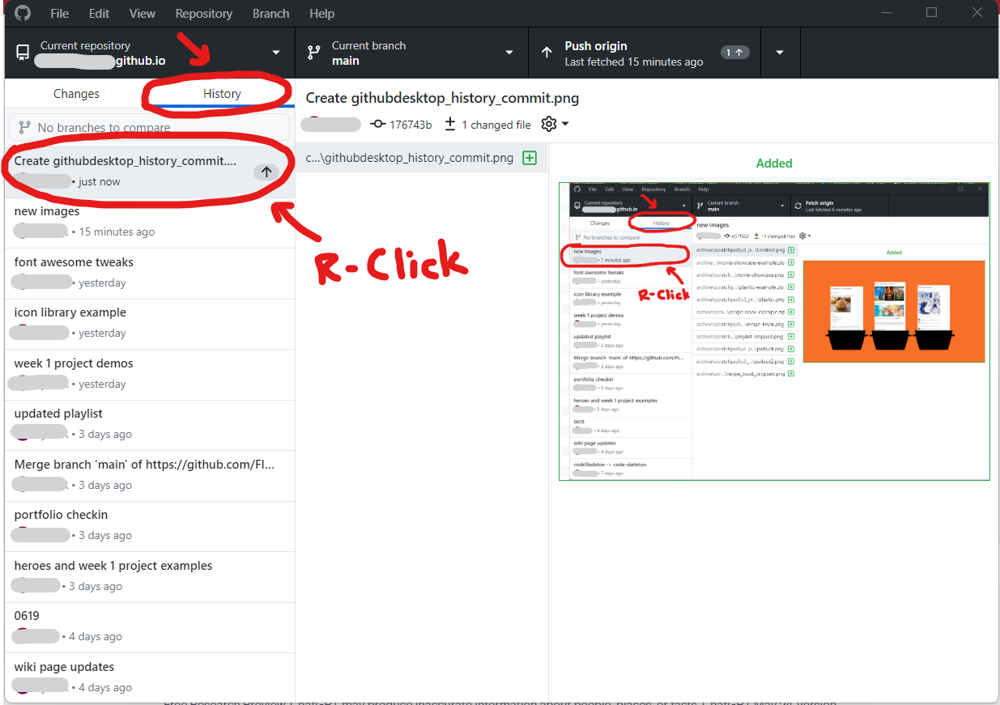
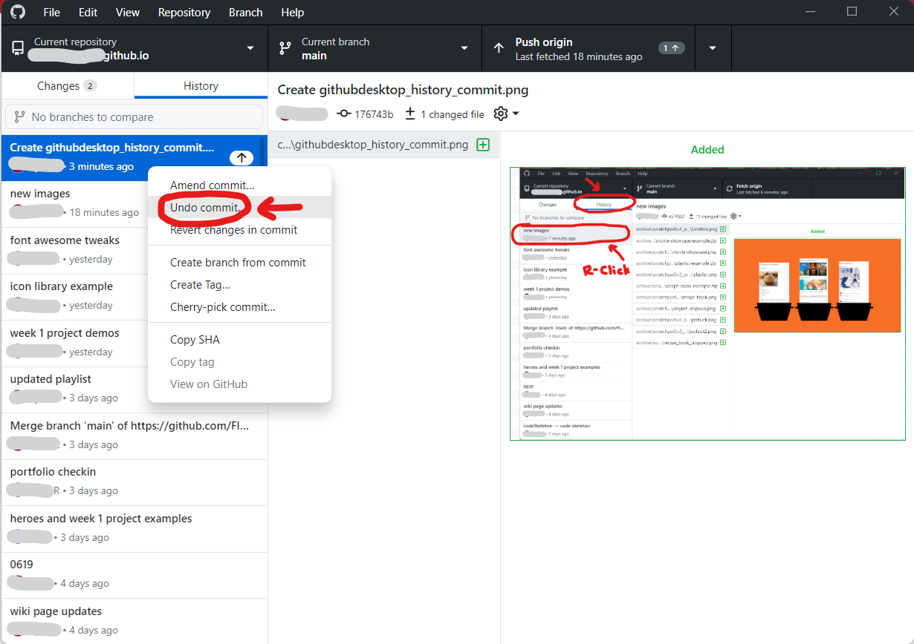

Undoing your commit
-
First, quit GitHub Desktop.
Don't just close or minimize it; make sure you've actually completely shut down the app.
You may need to Force-quit the app if it isn't behaving.
Then, open GitHub Desktop again; it shouldn't be pushing anymore.
-
GitHub Desktop is probably in the Changes tab by default; click on the History tab to switch over to that view.
In the History view, you'll see a list of all the commits you've ever made, with the most recent at the top.
The commit you were unable to push should have a little arrow next to it; this means that this commit hasn't been pushed yet.
Right-click on that commit.
Switch to the History tab, identify the commit to undo, and right-click it -
This should open up a context menu.
Click the option that says "Undo commit"
WARNING: Be very cautious in this view.
NEVER EVER click the option that says "Revert commit"!
This can potentially erase large chunks of your work from version control; it is possible to recover from this, but it will take a lot of time and effort to fix.Click the 'Undo commit...' option -
Now that we have installed the main code editor we will be utilizing throughout class, now we're going to install a few extensions that we will need for viewing the live renders of our code.
First, navigate to the left side panel in Visual Studio Code and click the icon with the four boxes.
Then, in the Extensions tab, click in the search bar at the top.

Navigating to the Extensions tab and the search bar inside In the search bar, type "live preview".
The extension "Live Preview" by Microsoft should be one of the first in the list. Click the Install button to install the extension
This extension will allow you to preview your HTML/CSS/Javascript code within Visual Studio.

A screenshot of the Live Preview extension In the Extensions tab, click in the search bar at the top. Then in the search bar, type "live server".
The extension Live Server by Ritwick Dey should be one of the first in the list. Click the Install button to install the extension
This extension will allow you to preview your HTML/CSS/Javascript code live in a web browser like Google Chrome.

A screenshot of the Live Server extension